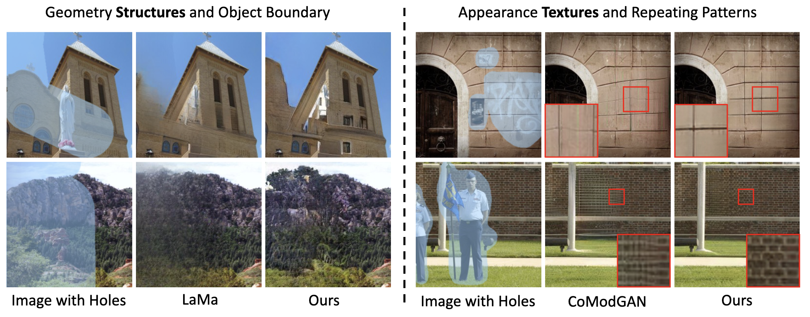

Abstract
Deep image inpainting has made impressive progress with recent advances in image generation and processing algorithms. We claim that the performance of inpainting algorithms can be better judged by the generated structures and textures. Structures refer to the generated object boundary or novel geometric structures within the hole, while texture refers to high-frequency details, especially man-made repeating patterns filled inside the structural regions. We believe that better structures are usually obtained from a coarse-to-fine GAN-based generator network while repeating patterns nowadays can be better modeled using state-of-the-art high-frequency fast fourier convolutional layers. In this paper, we propose a novel inpainting network combining the advantages of the two designs. Therefore, our model achieves a remarkable visual quality to match state-of-the-art performance in both structure generation and repeating texture synthesis using a single network. Extensive experiments demonstrate the effectiveness of the method, and our conclusions further highlight the two critical factors of image inpainting quality, structures, and textures, as the future design directions of inpainting networks.